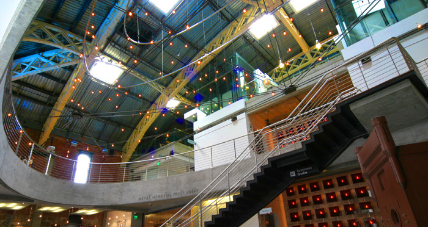

Join us in Portland!
What other event can say that they practice real-time failover in action? Join us again to hear talks from industry experts and community leaders discuss the newest approaches in monitoring and observability. Find out which tools and techniques are in use at some of the largest web architectures in the world.
Why me?
Because you care about the tools that you work with. You're an artisan within your team and you want to improve the monitoring toolkit. Oh, and because you understand that #monitoringlove isn't just a catchy hashtag.
Portland in September!
September weather in Portland is lovely, making it a perfect time to visit one of the most amazing cities in the world. Besides being a fantastic tech city, Portland, OR has some of the best food, coffee, and culture around.
I'm convinced. What now?
Go get your ticket while they last!
Get the Skinny
Subscribe here for updates on our next event. We will only use your personal contact details to inform you of new information regarding Monitorama events. Your details will not be used for any other purposes. More specifically, it will not be sold or shared with any third parties.
Call for Participation
Our call for participation is officially open. We're accepting proposals for 30-minute sessions to participate in our three-day, single-track agenda. As usual we'd love to hear about your failures and successes in production, new tools, or new takes on ways to use existing ones. We will consider all topics but we have some themes of particular interest this year:
- Open Source tooling - new software projects or interesting use cases for existing ones
- Adopting an observable mindset - pairing with engineering teams to level up observability efforts across the company
- Debugging art - unique tales of observability in action
- DIY Observability - supporting your company with internal tooling
- Migrations gone {bad,good} - moving from one software stack to another and how observability helped (or hurt) you along the way
You may submit as many proposals as you'd like. We're accepting submissions until 00:00 UTC April 25, 2021. Proposals will be selected by May 2, 2021 and submitters will be notified immediately thereafter. Speakers of 30-minute session talks will receive free registration to the event.
All fields with an (*) asterisk are required.
Portland 2021 - Event Status
All systems are operational.
Watch Live Stream
Meet the Speakers.
Schedule
Watch our live stream here!
Monitorama takes place September 13-15, 2021 in the Gerding Theater at The Armory in Portland, Oregon. Our program consists of three days of single-track sessions and lightning talks designed to educate and inspire.
- Monday September 13
- Registration 0800
- Welcome 0925
Presentation
TBDPresentation
TBD- Break 1030 - 1100
Presentation
TBDPresentation
TBD- Lunch 1215 - 1400
Presentation
TBDPresentation
TBD- Break 1515 - 1545
Presentation
TBDPresentation
TBDPresentation
TBD- Closing 1715
- Castaway Portland
After-Party1900 - 2200
- Tuesday September 14
- Registration 0800
- Welcome 0925
Presentation
TBDPresentation
TBD- Break 1030 - 1100
Presentation
TBDPresentation
TBD- Lunch 1215 - 1400
Presentation
TBDPresentation
TBD- Break 1515 - 1545
Presentation
TBDLightning Talks
- Closing 1645
- Sponsor Parties
- Wednesday September 15
- Registration 0800
- Welcome 0925
Presentation
TBDPresentation
TBD- Break 1030 - 1100
Presentation
TBDPresentation
TBD- Lunch 1215 - 1400
Presentation
TBDPresentation
TBD- Break 1515 - 1545
Presentation
TBDPresentation
TBD- Closing 1645
Registration is Open!
General Admission tickets are now available! If you have any problems with your registration, please contact us by email.
Refunds
Need to cancel? We'll haz a sad but we understand. Contact us by email no later than August 30, 2021 for a full refund or if you'd like to transfer your ticket to someone slightly more attractive and significantly more intelligent than you. Just kidding, you're fabulous -- please don't ever change.
We Love Our Sponsors.
Want to Be a Sponsor?
Monitorama offers a unique experience for both sponsors and attendees alike. We provide a low-pressure environment for networking with the audience, delivering your product messaging, and increasing the visibility of your brand. Year after year, sponsors and attendees return to Monitorama to learn about the newest innovations in both the commercial and open source communities.
Download our Prospectus to learn more about our sponsorship offerings.
For sponsorship opportunities, or to inquire about custom packages, please email us and we'll be happy to assist you.
Where It All Happens.
Monitorama PDX will be held in the Gerding Theater at The Armory (map), in the Pearl District of Portland, Oregon. The venue is a beautiful space, and also happens to be one of the greenest buildings in America. It's the first theater in the U.S. and the first building on the National Register of Historic Places to achieve a LEED Platinum rating. The venue address is 128 NW 11th Ave Portland, OR 97209.

Monitorama Sunset Hike
Let's go for a hike! We'll leave the venue after the closing on Wednesday afternoon and head into the beautiful hills west of downtown. After a short walk through the city, we'll find ourselves in Portland's famous International Rose Test Garden. We'll stroll along trails in the hills, see the sun begin to set on the city, and then head back to the venue by 7:00PM. Plan for 30 minutes (two miles) of city walking to and from the hills and an hour (4-5 miles) of hiking among roses and along gentle hill trails in warm, dry afternoon weather. You can preview the route on Google maps.

Looking for a Hotel?
We generally recommend The Mark Spencer Hotel, The Bidwell Marriott Portland, the Sentinel Hotel, or the Ace Hotel Portland. They're all walking distance from The Armory and have good reviews.
The Mark Spencer is offering a 20% group discount with included WiFi for Monitorama guests. Click here for group logins. Use the Group ID MNTRAMA and password 2021MONITOR and then book as normal. Please be aware that this discount rate is only good through August 16, 2021. Alternatively, you can call 503-224-3293 and ask for the Monitorama Rate.
The Bidwell Marriott Portland is offering a special group rate of $229 per night for Monitorama guests. Click here to book your room. Please be aware this discount rate is only good through August 12, 2021.
From Portland International Airport
- Take the TriMet MAX Red Line light rail and exit at Tenth Avenue/SW Morrison St (40 minutes)
- Walk to The Armory (7 minutes)
Local Travelers
Check out the directions provided by The Armory.
COVID-19 Vaccination Policy
To ensure the safety and well-being of everyone in attendance, we are asking all participants (including vendors, sponsors, speakers, staff and attendees) to have received a full COVID-19 vaccination at least two (2) weeks prior to travel for this event.
If you cannot comply with this requirement, we ask that you request a ticket refund by August 30, 2021 and enjoy the show by watching our live stream and participating remotely in our Slack workspace.
Code of Conduct
All delegates, speakers, sponsors and volunteers at any Monitorama event are required to agree with the following code of conduct. Organizers will enforce this code throughout the event.
The Quick Version
Monitorama is dedicated to providing a harassment-free conference experience for everyone, regardless of gender, sexual orientation, disability, physical appearance, body size, race, or religion. We do not tolerate harassment of conference participants in any form. Sexual language and imagery is not appropriate for any conference venue, including talks. Conference participants violating these rules may be sanctioned or expelled from the conference without a refund at the discretion of the conference organizers.
The Less Quick Version
Harassment includes offensive verbal comments related to gender, sexual orientation, disability, physical appearance, body size, race, religion, sexual images in public spaces, deliberate intimidation, stalking, following, harassing photography or recording, sustained disruption of talks or other events, inappropriate physical contact, and unwelcome sexual attention.
Participants asked to stop any harassing behavior are expected to comply immediately.
Sponsors are also subject to the anti-harassment policy. In particular, sponsors should not use sexualized images, activities, or other material.
Be careful in the words that you choose. Remember that sexist, racist, and other exclusionary jokes can be offensive to those around you. Excessive swearing and offensive jokes are not appropriate for Monitorama.
If a participant engages in harassing behavior, the conference organizers may take any action they deem appropriate, including warning the offender or expulsion from the conference with no refund.
If you are being harassed, notice that someone else is being harassed, or have any other concerns, please contact a member of conference staff immediately. Conference staff will be visible by their special badges and clothing.
Conference staff will be happy to help participants contact hotel/venue security or local law enforcement, provide escorts, or otherwise assist those experiencing harassment to feel safe for the duration of the conference. We value your attendance.
We expect participants to follow these rules at all conference venues and conference-related social events.
Monitorama Privacy and Data Policy
Summary: Monitorama LLC only collects the information necessary to register you for Monitorama and to provide you access to the Monitorama content and services. Registrant contact information is NOT shared with third parties without your explicit opt-in consent.
If you submit a talk, tutorial, or other content, then your name will be publicly associated with your personal content for purposes of giving you credit for your contribution to the conference and to maintain historical records.
You may opt in to getting email messages about the Monitorama conference, and you may opt-in to sharing basic contact information with sponsors of Monitorama. Choosing not to opt in will in no way detract from your ability to attend or engage with Monitorama.
After Monitorama is over and we have fully discharged all of our responsibilities, we will delete any personal information that is not required to preserve publicly-available educational materials or to maintain legal records.
Who Is Responsible for the Personal Information That We Collect?
For the purpose of data protection laws, Monitorama LLC is the data controller in respect to the personal information that we collect and use as part of our business activities. As the data controller, we control, manage, and dictate the purpose for which your personal information is used and how we use your personal information for our business activity.
If you choose to provide your personal information to other parties during Monitorama, including sponsors, then their data privacy policies apply to the data that you give to them.
What Personal Information Do We Collect?
The type of personal information that Monitorama LLC may collect include, but is not limited to the following:
- Full name
- Address
- Phone Numbers
- Email Addresses
- Other Contact Information
- Payment Information
- Company, Firm, Organization, Agency, or other entity information
- Photograph
- Biographies
- Preference Information, such as communications that you receive from us
- Dietary Preferences and Requirements
- Information that you provide to use for the purposes of attending meetings, events, webinars, and other programs
- Any other information relating to you (or other individuals) which you may provide to us
If you provide personal information to us regarding or related to a third party, then you confirm that you have the consent of the third party to share such personal information and that you have made the information in this Privacy Policy available to the relevant third party.
Use of Third Party Services
Monitorama LLC uses some third party services, notably Tito (https://ti.to/) to provide online event management and ticket registration services for Monitorama. Tito has its own terms of service and privacy policy, which apply to your use of the Tito service to purchase and assign Monitorama event tickets.
To the extent that any part of the Tito Terms of Service (https://ti.to/terms) or Privacy Policy (https://ti.to/privacy) is more restrictive than this policy, the more restrictive terms will apply.
Sensitive or Special Categories of Information
Sensitive Information
Some countries consider some personal information particularly sensitive or special. This may include Ethnicity, Nationality, Gender, and other demographic information. Monitorama LLC only collects this data when voluntarily given by the individual, and does not require it from any attendee. Monitorama LLC may use this information to create aggregated reports only; Monitorama LLC does not share any person’s sensitive information with third parties.
Website Usage Information
We collect information when you provide it to us, such as when you email us information, connect with us on social media, use the “contact us” feature, use the subscription feature located on our website, or when you engage in any other communication, recorded or otherwise communicated.
Monitorama LLC collects certain information automatically when you use the website, such as the IP addresses and domain names of visitors, browser type, history of pages viewed and other usage information about your use of the website. We collect this information for site administration purposes, such as to analyze this data for trends and statistics. We may share statistical or aggregated non-personal information about our users with advertisers, business partners, sponsors, or other third parties. This data is used to customize our website content and advertising to deliver a better experience to our users. Please see the section below on cookies for information.
Cookies
As you browse the Monitorama website (and the sites of third party providers contracted to provide services), those sites may place cookies on your computer. The cookies used by the Monitorama website are strictly functional cookies and have no marketing purpose. For any third party provider, please see that provider’s cookie policy.
Presenter or Author Information
If you choose to author a written resource, including a mailing list post, or speak at Monitorama (both live and recorded for further broadcasting), you may be required to provide minimal biographical information to associate with your presentation or materials. You agree that this information will remain publicly available for purposes of proper attribution of your work and maintenance of the historical record
How Do We Obtain Your Personal Information?
As noted above, we collect information from you in the course of your use of the Monitorama website, products, and services. For example, we collect information from you when you subscribe to our mailing list. We collect information from you when you contact or communicate with us (including through the website, by email, or otherwise). We collect your personal information while monitoring the Monitorama website, products, and services. We gather information about you when you provide it to us, or interact with us directly, for instance engaging with staff or registering for an event. We may also in certain cases collect or receive information about you from other sources, such as third party companies.
How Do We Use the Personal Information That We Collect?
Monitorama LLC collects personal information for the following principal purposes. The list below will state the purpose and the reason for the purpose of collecting your personal information.
- To provide the Monitorama website to you
- To enroll you for Monitorama-related mailings (opt-in only)
- To register you for events
- To provide you with information about Monitorama and events within Monitorama
- To communicate with you and to respond to your questions, inquiries, or concerns
- To administer and improve Monitorama, including the websites, events, and other services
- To process your payment for Monitorama events
- To prevent and detect fraud
- To protect and enforce our legal rights
We do this for our legitimate business purposes, and under certain circumstances, to perform a contract between you and us. We may request your consent in circumstances where a legal justification over and above legitimate interests is required by applicable law.
Who Do We Share Your Personal Information With?
Monitorama LLC may share personal information with third parties engaged to assist Monitorama LLC in providing services to you or to carry out one or more of the purposes described above. These service providers are prohibited from using your personal information for any purpose other than to provide this assistance and are contractually required to protect personal information disclosed by Monitorama LLC and to comply with the general privacy principles described in this Privacy Policy. For example, we share your information with service providers, contractors and sub-contractors to help us provide the website, products, events, and services. For example, we may use a service provider to process payment information or provide analytics. When we use service providers, we provide limited access to your information so that such service provider can perform the tasks on our behalf.
Monitorama LLC reserves the right to disclose and/or transfer personal information to a third party, if Monitorama LLC has reason to believe that disclosing personal information is necessary to identify, contact, or bring legal action against someone who may be causing injury to or interference with our rights or property, other website users, or anyone else who could be harmed by such activities. Additionally, Monitorama LLC may disclose personal information in response to a subpoena, warrant, or other court order, or when we believe in good faith that a law, regulation, subpoena, warrant or other court order requires or authorizes us to do so, or it is required to respond to an emergency situation.
If you choose not to provide Monitorama LLC with your personal information, you may still visit the Monitorama website; however, you may be unable to access certain options, offers, and services.
Transfer of Personal Information Across Borders
Monitorama LLC is a United States organization, headquartered in the United States. While we are not a global company, we may allow your personal information to be shared with third-party service providers based both within the United States and in other countries. This may entail a transfer of your personal information from a location within the European Economic Area to outside the European Economic Area, or from outside the European Economic Area to a location with the Economic European Area.
When we provide your personal information overseas, we do so in connection with providing information or services or as required or authorized under law. It is possible the overseas entities, which we share your information with, may not be subject to foreign laws that provide the same level of protection of information with, may not be subject to foreign laws that provide the same level of protection of information as your country of residence or employment, or may not be subject to any privacy obligations. Overseas entities may be required or compelled to disclose your personal information to a third party, such as an overseas authority. Where we transfer information outside of the European Economic Areas, we will implement appropriate measures to ensure that your personal information remains protected and secure in accordance with applicable data protection laws. For example, we will implement EU standard contractual clauses (as contemplated by Article 46(2) of the European Union’s General Data Protection Regulation) between Monitorama LLC related entities that share and process personal data. Where our third-party service providers process personal data outside the European Economic Area in the course of providing services to us, our written agreement with them will include appropriate measures, usually standard contractual clauses. For more information about the measures in place, please contact us (see section below “Contacting Monitorama LLC with Questions, Concerns, or Complaints”).
Unfortunately, the transmission of information via the internet is not completely secure. Although we use reasonable efforts to protect your personal information, we cannot guarantee the security of your personal information transmitted to our website and any transmission is at your own risk. Once we have received your personal information, we will use reasonable and appropriate procedures and security features to try to prevent unauthorized access.
Your Rights, Including Removing, Correcting or Updating Personal Information
If you change your mind on how Monitorama LLC discloses or uses your information, or wish to access, correct or update personal information (such as your address), we will endeavor to correct, update or remove the personal data that you give us. Information that you have explicitly made available for unrestricted public access, such as having your name associated with a talk that you provide, may not be able to be deleted.
Citizens of California and citizens of countries in the European Union and European Economic Area may have further rights, including:
- Right of Access to your Personal Information
- Right to Rectify your Personal Information
- Right to Erasure of your Personal Information
- Right to Restrict the use of your Personal Information
- Right to Data Portability
- Right to Object to the Personal use of your Information
- Right to Withdraw Consent
- Right to Complain to the Relevant Data Protection Authority
If these rights apply to you and you wish to exercise those rights, please contact the Monitorama organizers.
How Long Will We Keep Your Personal Information?
We will keep your personal information for no longer than is necessary for the purposes for which the personal data are processed.
Contacting Monitorama LLC with Questions, Concerns, or Complaints
If you have any questions, concerns, or complaints about this Privacy Policy, please contact info@monitorama.com. You are entitled to make an anonymous complaint or inquiry in relation to this Privacy Policy or your privacy rights; however, we may require you to identify yourself if required by law or it is impracticable for us to deal with your matter otherwise
We will acknowledge receipt of any complaint and will strive to provide you with a written response within 30 days of receipt of your complaint. There may be instances where this is not possible due to the circumstances under which the complaint was made, the content of the complaint, and the scope of the complaint. If this is the case, we will respond to your complaint in a reasonable and practical time.